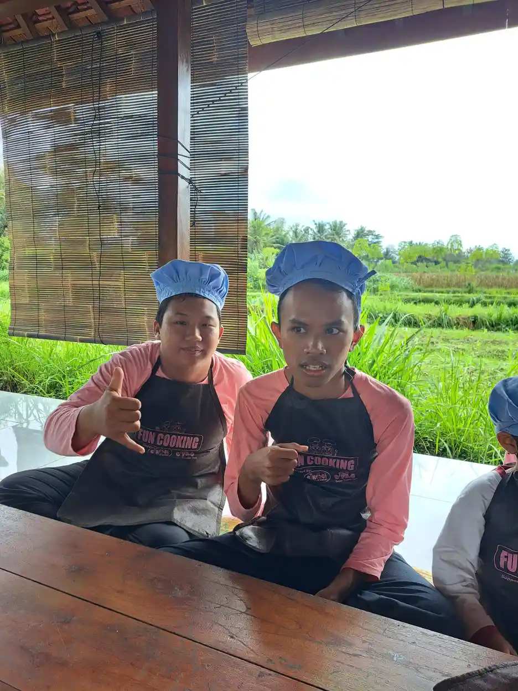

Milestone motorik halus anak 1-3 tahun mencakup kemampuan memakai tangan dan jari untuk meraih, menggenggam, memindahkan benda, mencoret, menyusun, makan, membuka atau menutup benda sederhana, serta membantu aktivitas sehari-hari. Anak berkembang dengan kecepatan yang tidak persis sama, sehingga daftar milestone sebaiknya dipakai untuk mengamati pola dan berdiskusi dengan tenaga profesional, bukan untuk memberi label dari satu kemampuan yang belum muncul.
Daftar Isi
- Usia 12-18 Bulan: Meraih, Memindahkan, dan Mengeksplorasi
- Usia 18-24 Bulan: Coretan, Susunan, dan Kemandirian Awal
- Usia 24-36 Bulan: Menggambar, Memakai Alat, dan Mengikuti Urutan
- Aktivitas Rumah yang Mendukung Motorik Halus
- Tanda yang Perlu Dicatat dan Didiskusikan
- Menyesuaikan Stimulasi untuk Anak dengan Kebutuhan Beragam
- Cara Membuat Catatan Perkembangan yang Berguna
- Rencana Praktis Tujuh Hari
- Pertanyaan yang Sering Diajukan
Jawaban Singkat: Milestone Motorik Halus Berkembang Bertahap
Milestone motorik halus anak 1-3 tahun mencakup kemampuan memakai tangan dan jari untuk meraih, menggenggam, memindahkan benda, mencoret, menyusun, makan, membuka atau menutup benda sederhana, serta membantu aktivitas sehari-hari. Anak berkembang dengan kecepatan yang tidak persis sama, sehingga daftar milestone sebaiknya dipakai untuk mengamati pola dan berdiskusi dengan tenaga profesional, bukan untuk memberi label dari satu kemampuan yang belum muncul.
Pada usia 1 tahun, banyak anak mulai lebih terampil mengambil benda kecil dengan ibu jari dan telunjuk, memasukkan benda ke wadah, menunjuk, membalik halaman tebal, atau membawa makanan ke mulut. Memasuki usia 2 tahun, anak biasanya mulai meniru garis atau coretan, menumpuk beberapa balok, memakai sendok dengan bantuan, dan mencoba membuka kemasan sederhana. Menjelang 3 tahun, sebagian anak dapat menggambar bentuk dasar, menyusun benda lebih rapi, menggunting dengan bantuan, dan ikut memakai pakaian.
Rentang tersebut bukan jadwal ujian. WHO menjelaskan bahwa milestone dapat membantu orang tua mengamati perkembangan, sedangkan WHO juga menekankan pentingnya melihat pertumbuhan dan perkembangan secara menyeluruh. Perhatikan juga komunikasi, gerak kasar, kemampuan bermain, kemandirian, perhatian, serta cara anak beradaptasi dengan lingkungan.
Jika anak kehilangan kemampuan yang sebelumnya sudah dikuasai, tampak sangat kesulitan memakai salah satu sisi tubuh, sering kesakitan, atau tidak ada kemajuan dalam beberapa bulan meskipun sudah diberi kesempatan bermain, orang tua sebaiknya berkonsultasi. Pemeriksaan lebih awal membantu keluarga memahami kebutuhan anak tanpa menunggu perbandingan dengan anak lain menjadi sumber kecemasan.
Usia 12-18 Bulan: Meraih, Memindahkan, dan Mengeksplorasi
Pada rentang 12-18 bulan, anak sedang membangun koordinasi mata dan tangan. Ia mungkin meraih benda yang menarik, memindahkan mainan dari satu tangan ke tangan lain, memasukkan benda ke wadah, atau mengambil potongan makanan kecil. Aktivitas ini terlihat sederhana, tetapi melibatkan penglihatan, stabilitas bahu, gerak pergelangan, kekuatan jari, dan kemampuan memperkirakan jarak.
Orang tua dapat menyediakan benda berukuran besar yang aman untuk dimasukkan ke wadah, balok besar, buku karton, gelas plastik, atau makanan lunak yang dapat dipegang. Dampingi anak setiap saat dan jauhkan benda kecil yang berisiko tertelan. Tujuan kegiatan bukan membuat anak menyelesaikan tugas dengan sempurna, melainkan memberi pengalaman berulang dalam suasana yang menyenangkan.
Berikan satu instruksi singkat, lalu beri waktu anak mencoba. Jika tangan anak belum stabil, bantu dengan menahan wadah atau menempatkan benda lebih dekat. Hindari terlalu sering mengambil alih karena kesempatan mencoba membantu anak memahami hubungan antara gerakan dan hasil. Bacaan tentang motorik halus dapat membantu orang tua mengenali komponen keterampilan yang sedang dilatih.
Catat kondisi yang membuat anak lebih mudah berhasil. Sebagian anak lebih fokus ketika duduk dengan kaki menapak, sebagian memerlukan jeda karena cepat lelah, dan sebagian lebih nyaman dengan benda bertekstur tertentu. Catatan tersebut berguna saat berdiskusi dengan dokter, terapis, atau guru di kemudian hari.
Usia 18-24 Bulan: Coretan, Susunan, dan Kemandirian Awal
Pada usia 18-24 bulan, anak biasanya mulai lebih aktif menggunakan alat sederhana. Ia mungkin mencoret kertas, menumpuk beberapa balok, membuka tutup yang longgar, membalik halaman, memasukkan sendok ke makanan, atau mencoba melepas kaus kaki. Hasilnya tidak selalu rapi. Yang penting adalah anak mulai merencanakan gerak, mengulangi percobaan, dan belajar dari umpan balik.
Sediakan krayon berukuran besar, kertas yang ditempel agar tidak bergeser, balok besar, puzzle dengan kenop, dan wadah dengan tutup yang mudah dibuka. Kegiatan memasukkan, menuang, meremas adonan yang aman, atau memindahkan spons basah dapat memperkaya pengalaman. Pilih bahan yang tidak mudah pecah, tidak tajam, dan tidak bisa masuk ke mulut.
Kegiatan sehari-hari adalah latihan yang bermakna. Ajak anak membawa kain kecil ke tempat cucian, mengambil sendok, memasukkan mainan ke keranjang, atau memilih antara dua baju. Jika anak memiliki kebutuhan perkembangan tertentu, aktivitas dapat dipecah menjadi langkah lebih kecil. Ide stimulasi motorik halus dapat disesuaikan dengan minat dan stamina anak.
Jangan menjadikan latihan sebagai tes yang harus diulang sampai benar. Beri pujian pada usaha yang spesifik, seperti “kamu memegang sendok dengan dua tangan” atau “kamu mencoba memasukkan balok”. Umpan balik konkret membantu anak memahami strategi yang dapat dipakai lagi.
Usia 24-36 Bulan: Menggambar, Memakai Alat, dan Mengikuti Urutan
Menjelang usia 3 tahun, banyak anak mulai menggabungkan beberapa langkah dalam satu aktivitas. Anak dapat mencoba menggambar garis dan lingkaran, menyusun balok menjadi menara, makan dengan sendok dan garpu dengan tumpahan yang masih wajar, atau membantu membuka celana dan sepatu. Perbedaan kemampuan masih dapat terlihat jelas karena pengalaman bermain dan kesempatan berlatih tiap anak berbeda.
Gunakan kegiatan yang memiliki tujuan nyata. Anak dapat memindahkan baju ringan, menyobek daun selada saat memasak, mencocokkan kaus kaki, memutar kenop besar, menempel stiker, atau menyusun benda berdasarkan warna. Untuk kegiatan dapur, pilih alat aman dan selalu dampingi. Jangan memberi akses ke pisau, kompor, benda panas, atau bahan kecil yang mudah tertelan.
Latihan urutan membantu keterampilan motorik dan fungsi eksekutif. Tunjukkan tiga langkah sederhana, misalnya ambil sikat, beri pasta secukupnya, lalu sikat gigi. Gunakan gambar atau contoh langsung jika instruksi lisan belum cukup. Latihan kemandirian dapat menjadi rujukan ketika orang tua ingin mengurangi bantuan secara bertahap.
Jika anak belum tertarik menggambar, jangan memaksanya duduk lama. Mulai dari coretan pendek, aktivitas berdiri, atau kegiatan yang sesuai minat. Sebagian anak lebih menikmati membangun, memasak, meronce dengan benda besar, atau membantu merapikan daripada menggunakan pensil. Minat dapat menjadi pintu masuk untuk memperkuat koordinasi tangan.
Aktivitas Rumah yang Mendukung Motorik Halus

Stimulasi yang baik bersifat singkat, berulang, dan terkait kehidupan anak. Pilih satu aktivitas selama lima sampai lima belas menit, lalu berhenti sebelum anak terlalu lelah. Besok, ulangi dengan sedikit variasi. Pola ini lebih realistis daripada memberi banyak permainan sekaligus dan berharap anak mengikuti semuanya.
Untuk menguatkan koordinasi dua tangan, ajak anak memegang wadah dengan satu tangan sambil memasukkan benda dengan tangan lain, merobek kertas, membuka buku, mengaduk makanan dingin, atau menarik ritsleting besar. Untuk ketepatan gerak, gunakan stiker, puzzle kenop, memasukkan koin mainan ke celengan besar, dan mencocokkan bentuk yang aman.
Untuk keterampilan makan, berikan alat makan yang ukurannya sesuai dan posisi duduk stabil. Tawarkan kesempatan membawa sendok ke mulut tanpa menuntut porsi besar. Jika anak sering tersedak, batuk saat makan, atau tampak sangat kesulitan mengunyah, hentikan eksperimen makanan dan minta saran tenaga kesehatan. Terapi okupasi atau terapi wicara dapat relevan sesuai masalah yang ditemukan.
Mainkan aktivitas yang disukai anak. Memasak sederhana, merawat tanaman, bermain balok, atau menempel gambar dapat menjadi sarana latihan. Kegiatan tidak harus mahal. Yang penting adalah benda aman, tujuan jelas, kesempatan mengulang, dan dukungan yang disesuaikan.
Tanda yang Perlu Dicatat dan Didiskusikan
Orang tua perlu lebih waspada jika anak terus menghindari penggunaan satu tangan, tampak sangat kaku atau sangat lemas, sering menjatuhkan benda dengan keluhan nyeri, atau kesulitan melakukan aktivitas yang sebelumnya sudah dikuasai. Satu tanda tidak otomatis berarti diagnosis tertentu, tetapi pola yang menetap layak dibahas dengan tenaga profesional.
Perhatikan juga konteks. Anak mungkin dapat mencoret ketika tenang tetapi tidak ketika ramai, dapat makan dengan sendok tetapi cepat lelah, atau dapat memakai kedua tangan saat bermain tetapi selalu meminta bantuan pada aktivitas tertentu. Catatan tentang kapan, berapa lama, dan dukungan apa yang membantu akan membuat konsultasi lebih informatif.
Jika kekhawatiran berkaitan dengan beberapa area perkembangan, orang tua dapat meminta asesmen kebutuhan anak atau pemeriksaan perkembangan sesuai layanan di daerah. Tujuannya bukan mencari label secepat mungkin, melainkan memahami dukungan yang diperlukan untuk bermain, belajar, berkomunikasi, dan merawat diri.
Jangan membandingkan video anak dengan konten media sosial. Video sering dipilih karena terlihat berhasil dan tidak menunjukkan proses, suasana, atau kebutuhan dukungan. Fokus pada perubahan anak dari waktu ke waktu dan pada fungsi nyata dalam kehidupan sehari-hari.
Menyesuaikan Stimulasi untuk Anak dengan Kebutuhan Beragam
Anak dengan keterlambatan perkembangan, cerebral palsy, autisme, gangguan penglihatan, atau kondisi lain mungkin membutuhkan adaptasi. Adaptasi dapat berupa alat dengan pegangan lebih besar, permukaan antiselip, posisi duduk yang stabil, waktu lebih panjang, instruksi visual, atau pengurangan jumlah benda di meja. Dukungan bukan berarti menurunkan harapan, tetapi membuka jalan agar anak dapat berpartisipasi.
Untuk anak yang mudah kewalahan, gunakan lingkungan yang lebih tenang dan satu bahan pada satu waktu. Untuk anak yang membutuhkan gerak lebih banyak, selingi aktivitas duduk dengan berdiri atau berjalan. Untuk anak yang kesulitan merencanakan gerakan, tunjukkan contoh dan pecah tugas menjadi langkah kecil. Baca prinsip pendidikan inklusi untuk melihat bagaimana akses dapat dirancang di rumah dan sekolah.
Jika anak menjalani terapi, tanyakan tujuan fungsionalnya. Contohnya bukan hanya “menguatkan tangan”, tetapi mampu memegang sendok, membuka tas, atau memakai pakaian dengan bantuan lebih sedikit. Tujuan yang dapat diamati membantu keluarga mempraktikkan strategi dengan konsisten dan menilai apakah aktivitas memang bermanfaat.
Libatkan anak dalam memilih aktivitas dan menerima bantuan. Anak berhak berhenti jika sakit, takut, atau lelah. Menghormati komunikasi tubuh dan pilihan anak merupakan bagian penting dari pengasuhan yang aman, termasuk ketika orang tua sedang mengejar target perkembangan.
Cara Membuat Catatan Perkembangan yang Berguna
Buat tabel sederhana berisi tanggal, aktivitas, tingkat bantuan, durasi, dan respons anak. Misalnya, “28 September, memasukkan balok ke wadah, bantuan verbal satu kali, lima menit, mau mengulang”. Catatan seperti ini lebih berguna daripada menulis “motoriknya bagus” karena menunjukkan perilaku yang bisa diamati.
Ambil foto atau video hanya jika anak nyaman dan data disimpan dengan aman. Hindari mengunggah wajah atau informasi kesehatan anak ke publik tanpa pertimbangan. Jika perlu menunjukkan video kepada dokter atau terapis, tanyakan cara pengiriman yang aman dan siapa yang dapat melihatnya.
Tinjau catatan setiap dua sampai empat minggu. Cari pola kecil, seperti durasi fokus bertambah, bantuan berkurang, atau anak memilih strategi baru. Jika tidak ada perubahan, bukan berarti latihan gagal. Mungkin tujuan perlu disederhanakan, posisi tubuh diperbaiki, aktivitas diganti, atau anak membutuhkan evaluasi.
Bawa pertanyaan dan catatan saat konsultasi. Tanyakan kemampuan yang menjadi prioritas, aktivitas yang perlu dihindari, tanda bahaya, dan kapan evaluasi berikutnya. Kolaborasi dengan keluarga, guru, dan tenaga profesional membantu dukungan tetap konsisten.
Rencana Praktis Tujuh Hari
Hari pertama, amati aktivitas yang paling mudah dan paling sulit tanpa memberi latihan tambahan. Hari kedua, siapkan satu bahan aman untuk aktivitas memindahkan atau memasukkan. Hari ketiga, tambahkan kegiatan dua tangan seperti membuka buku atau memegang wadah. Hari keempat, pilih kegiatan kemandirian seperti makan atau merapikan mainan.
Hari kelima, ulangi aktivitas yang paling disukai dengan durasi pendek. Hari keenam, kurangi bantuan satu langkah jika anak siap, tetapi tetap sediakan bantuan bila diminta. Hari ketujuh, tulis apa yang berubah, kapan anak terlihat lelah, dan dukungan apa yang paling membantu. Rencana ini fleksibel dan bukan pengganti asesmen profesional.
Kunci utamanya adalah kesempatan yang aman, target yang realistis, dan penghormatan pada ritme anak. Milestone membantu orang tua mengamati, tetapi hubungan, bermain, dan partisipasi sehari-hari tetap menjadi pusat perkembangan. Jika ada kekhawatiran yang menetap, cari dukungan lebih awal daripada menunggu anak “mengejar sendiri”.
Pertanyaan yang Sering Diajukan
Apa saja milestone motorik halus anak usia 1 tahun?
Anak mungkin mulai mengambil benda kecil dengan ibu jari dan telunjuk, memasukkan benda ke wadah, menunjuk, membalik halaman tebal, serta membawa makanan ke mulut. Rentang kemampuan dapat berbeda antar-anak.
Kapan anak usia 2 tahun biasanya mulai menggambar?
Banyak anak mulai membuat coretan atau meniru garis sederhana sekitar usia 2 tahun, tetapi minat dan pengalaman tiap anak berbeda. Sediakan alat aman tanpa memaksa hasil gambar tertentu.
Apakah anak yang belum bisa memakai sendok pasti mengalami keterlambatan?
Tidak selalu. Kemampuan dipengaruhi pengalaman, posisi duduk, koordinasi, sensorik, perhatian, dan kesempatan berlatih. Catat polanya dan konsultasikan jika kesulitan menetap atau disertai tanda lain.
Bagaimana stimulasi motorik halus yang aman di rumah?
Gunakan benda besar dan tidak tajam untuk memasukkan, memindahkan, menyusun, mencoret, menempel, atau membantu aktivitas rumah. Dampingi terus dan hindari benda kecil yang mudah tertelan.
Kapan orang tua perlu berkonsultasi?
Konsultasikan jika anak kehilangan kemampuan yang sudah dikuasai, tampak nyeri, sangat kaku atau lemas, terus menghindari satu tangan, atau tidak ada kemajuan dalam beberapa bulan meski sudah diberi kesempatan.
Apakah terapi okupasi diperlukan untuk semua anak?
Tidak. Terapi dipertimbangkan berdasarkan kebutuhan dan dampak pada aktivitas sehari-hari. Tenaga profesional dapat membantu menentukan tujuan fungsional serta adaptasi yang sesuai.
Bacaan Terkait untuk Keluarga
Topik perkembangan dan terapi saling berhubungan. Lanjutkan dengan membaca pengertian motorik halus, contoh keterampilan motorik halus, perbedaan motorik kasar dan halus, ide stimulasi motorik halus, kegiatan motorik halus di rumah, cara memberi stimulasi, latihan yang mudah dilakukan, permainan motorik halus, terapi okupasi untuk keterampilan sehari-hari, asesmen kebutuhan anak, pendidikan inklusi, peran orang tua.
Sumber dan Referensi
- WHO, informasi pertumbuhan dan perkembangan anak
- American Academy of Pediatrics, tahap perkembangan balita
- NHS, perkembangan awal dan aktivitas bersama anak
Catatan: Artikel ini bersifat edukasi umum. Untuk keputusan kesehatan, perkembangan, terapi, atau keselamatan anak, konsultasikan kondisi individual kepada tenaga profesional. Sumber dicek pada 28 September 2026.